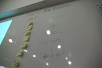

おかげさまでVol.1を無事終了できました。
簡単ですがレポートです。
レポートとか書いてあるBlog
概要
- 日時：2008/09/14(日) 14:00~19:00
- 場所：AIPcafe
- 参加人数：20人
- ライトニングトーク発表者：13人？
大まかな流れ
- 12:30〜 ランチオフ
- 14:00〜 あいさつ＆順番決め
- 14:30〜 ライトニングトーク
- 「SEO SEO言わないで」 (プロボの西嶋さん)
- 「運営サイトとEC-CUBEの導入時の苦労について」 (八尋さん＠JA福岡市)
- 「EC-CUBEについて」（アイキューブドシステムズ 上戸さん)
- 「ECサイトの運営」 (ココナッツジャムの有常さん)
- 「CMS使いこなせてない」 (YUKIさん)
- 「WordpressとMovabletypeのカスタマイズ」 (mutusking@CGFM)
- 「Webデザイナー的なCMSの愛し方」 (BULANCOの山田さん)
- 「DW＋ContributeでできるWebデザイナーのサイト管理術っぽいの」 (我流@CGFM)
- 「Wordpressでのサイト運営」(安部さん)
- 「Wordpressプラグインこんなの作っちゃったよ」（InazumaTVの大久保さん)
- 「Serene Bachの紹介」（高田さん)
- 「Serene Bachの導入実績」（パーシモンズの柿元さん)
- 「NYokki（ニョッキ)の紹介」（アイキューブドシステムズ 田村さん)
- 18:30〜 次回の日時決定と次回のお題出し
- 19:00〜 交流会
ざっくりとした内容とか
- 「SEO SEO言わないで」 (プロボの西嶋さん)
- 見出し＝タイトル （＝パンくずリストのラスト？）
- タイトルは70バイト以内がいいらしい
- パンくずの現在地はstrongタグで囲む
- 結論としては「魅力あるコンテンツが大事」
- 資料スライドはこちらから（PDF）
- 「運営サイトとEC-CUBEの導入時の苦労について」 (八尋さん＠JA福岡市)
- JA福岡市のサイト運営の苦労話
- EC-CUBEの導入できるサーバーが少なくて苦労した
- 「EC-CUBEについて」（アイキューブドシステムズ 上戸さん)
- 実際にカスタマイズした時に苦労した点等
- 一つ機能を追加すると、影響範囲が複数多岐にわたるので結構大変
- 「ECサイトの運営」 (ココナッツジャムの有常さん)
- 昼は出勤、夜は子育てと忙しい中でどういう時間配分でサイト運営をしてるか、時間の使い方
- 時間をどう作ったか、どこを外に回して、どこを自分でやるか
- 御客様への手作りメッセージ、梱包等は自分で。
- 一部のサイト更新は友人に頼んでる
- SEO対策、検索結果上位表示は売上と連動するから必須
- 静的HTMLの500Pの更新を毎月１回やってる←月１回ならいいのか？
- 「CMS使いこなせてない」 (YUKIさん)
- カスタマイズしても、クライアントが使ってくれず、結局自分達で更新する事が多い
- 機能を絞ってシンプルなシステムを作った方が、引き継ぎや説明をしやすい
- 「WordpressとMovabletypeのカスタマイズ」 (mutusking@CGFM)
- それぞれのカスタマイズで、<div>タグが途中で切れるかどうかが見通しの良さに繋がる
- MTの方がソースの見通しがいい。
- WordpressはPHPでガリガリカスタマイズしたい人には向いてる
- 資料スライドはこちらから（PDF）
- 「Webデザイナー的なCMSの愛し方」 (BULANCOの山田さん)
- 「DW＋ContributeでできるWebデザイナーのサイト管理術っぽいの」 (我流@CGFM)
- Dreamweaver＋Contributeで実際に運営してるサイト「北九州芸術劇場」の紹介
- 他、地方自治体の実績案内
- 実際の操作画面の動画とか
- Blogも更新できちゃうよ
- 資料スライドはこちらから（PDF）
- 「Wordpressでのサイト運営」(安部さん)
- WPを使って制作したイデオートサービスのサイト運営方法等
- 実際に使ってるプラグインの紹介等
- 「Wordpressプラグインこんなの作っちゃったよ」（InazumaTVの大久保さん)
- 50歳超えて尚、第一線でバリバリ現役
- サイト運営者の多様な要望に応えるべくプラグインを作成
- あ・るっく福岡 のサイト管理画面で自作プラグインを披露
- 「Serene Bachの紹介」（高田さん)
- 自分みたいなシステムに強く無いWebデザイナーでも簡単に導入できる
- クライアントに簡単に更新できると評判
- CGIだから場所を選ばない
- 「Serene Bachの導入実績」（パーシモンズの柿元さん)
- 実際に導入した西南学院大学大学院 の紹介
- 福岡県で作られたCMSなのに知名度が低いのでもったいない。
- 「NYokki（ニョッキ)の紹介」（アイキューブドシステムズ 田村さん)
- MODxをベースにカスタマイズされたASPサービス：NYokki（ニョッキ)の紹介
- PC操作スキルが低いクライアントでも更新してもらってる。
- 拡張性の高さなど考えると、MTやWPのブログをCMS的に使うよりも簡単で高機能ではないか。
以下、スナップショット。
参加者の娘さん達。
みんなで意見を出し合える雰囲気でした。
時には白熱した意見が出る時も。
お待ちかねの交流会スタート！
４時間を超える長丁場、本当にみなさんお疲れさまでした！
今回の反省・今後の事
- 実績や案件を見せようとするとUSTは緊張してしまう。なるべくレポを残す形で、Ustはやらない方向で。
- 長丁場だったので適度に休憩を入れる
- いつかテーブルトークなどやってみよう
- 将来的には企業の担当者、Webマスターのお悩み相談室みたいな事をやってみよう
次回のお題や日時について
次回は 2008/10/18(土)の昼からになりました。
申込受付はまた行います。
最後に次回誰かにやって欲しいお題を、各自付箋に書き出しました。
「このテーマなら俺何か話すよ！」という感じでやってみたいと思ってます。
→グループのツリーの方に、追記とかをいろいろ書いてもらってます。
- どんなクライアントにどんな風に更新させるか？
- クライアントにWPで更新してもらうためのマニュアル作り
- 月次のアクセスレポートってクライアントにどこまでどんな形で報告していますか？
- アクセス解析の見方
- 更新表
- 見積について
- 安く早くWPテーマを作る方法
- コーディング、システムの組みやすいデザインは？
- 物件管理どうしてる？時間・制作・営業管理
- WEBに弱いお客さんにWEBサイト作りをどう理解してもらえるか？
説得のコツを教えて！
- 使いまわし、引継ぎのしやすいCSSの使い方
- 使いやすいUI設計とか
- サーバ会社設定方法
（できれば地元、顔が見えて無理聞いてもらえる）
- MTの制作フロー実例
- Yahooってどう？（SEO）
- ECサイトで、独自サイト？ 楽天？ ヤッフー（オークション含む）？ いいとこ？ わるいとこ？
- MT使っての携帯サイトについて （やっぱり携帯サイトって必須？） どんなことしてますか？
ログはどうやってとってるか？ など。
|